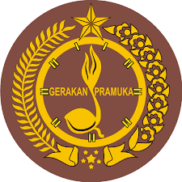

SMANDALAS LUTRA
Profil Sekolah
SMAN 12 LUWU UTARA merupakan salah satu sekolah jenjang SMA berstatus Negeri yang berada di wilayah Kec. Tana Lili, Kab. Luwu Utara, Sulawesi Selatan. SMAN 12 LUWU UTARA didirikan pada tanggal 25 Juli 2006 dengan Nomor SK Pendirian 234 TAHUN 2006 yang berada dalam naungan Kementerian Pendidikan dan Kebudayaan.
Bidang Jurusan
Jurusan yang Dimiliki

IPA

IPS
Bahasa
Ekstrakurikuler
